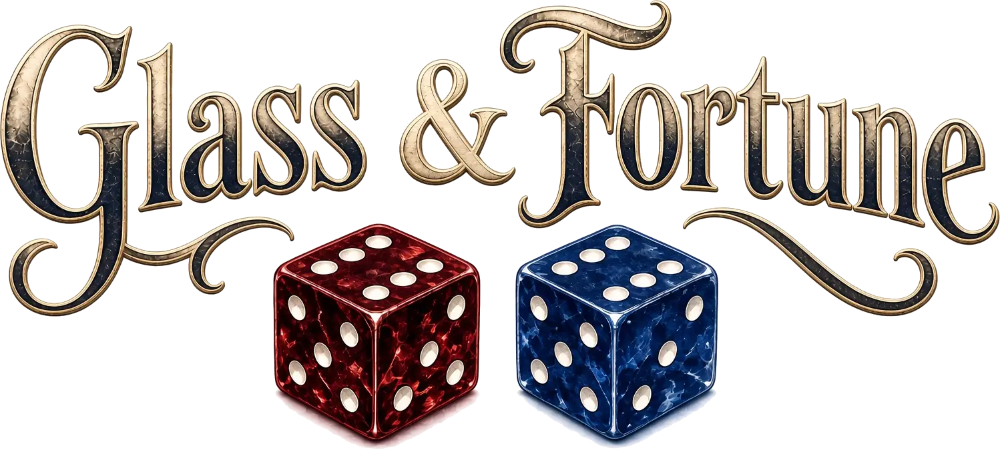
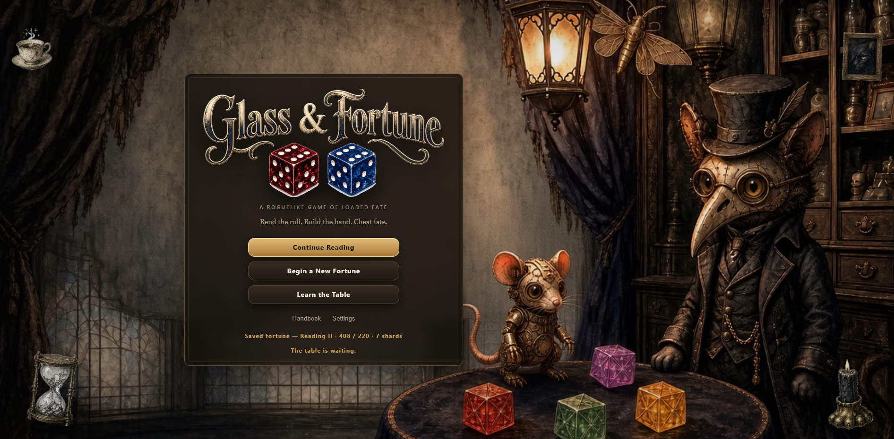
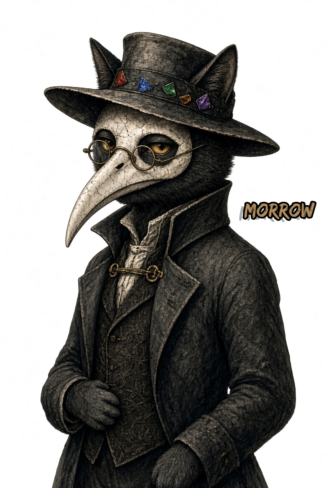
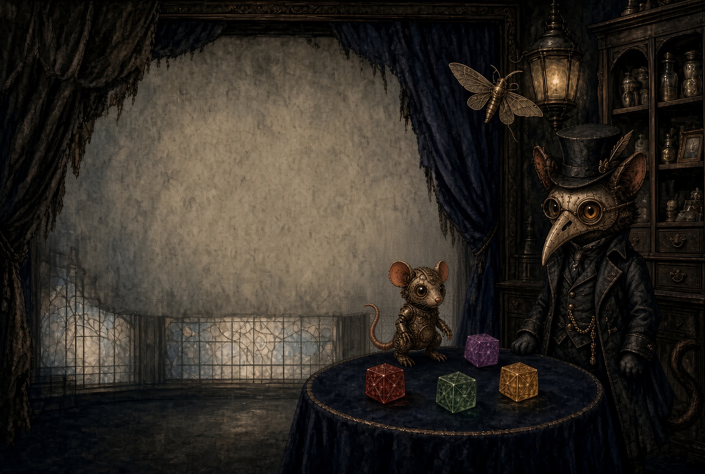
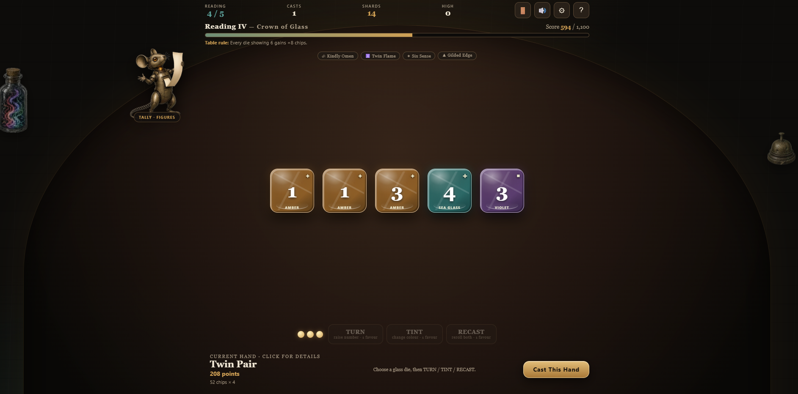
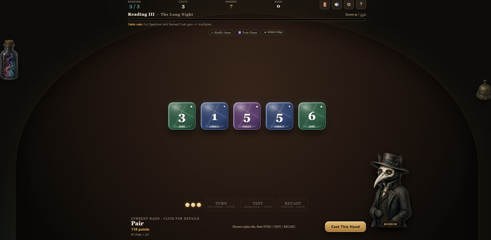
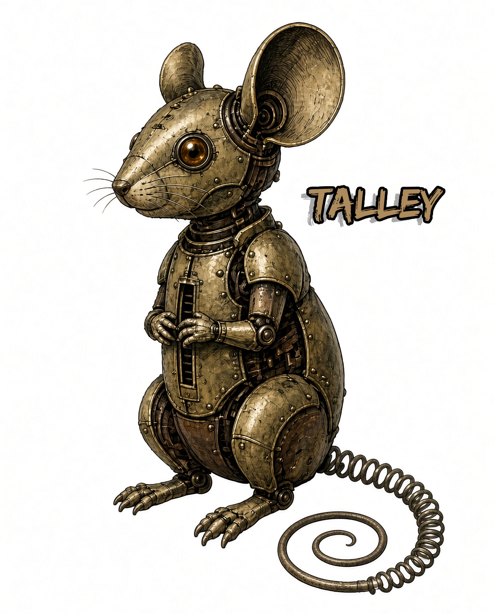

GLASS & FORTUNE
A roguelike game of loaded fate. Bend the roll. Build the hand. Cheat fate.
Overview
Glass & Fortune is a dark tabletop roguelike built around five mutable glass dice. Every die carries a number and a colour, and both of them score. Build a hand across twelve Readings, bend the roll with limited actions before you commit it, and cast when the odds feel right — or one cast too late.
You are not rolling and hoping. TURN raises a number, TINT changes a colour, RECAST rerolls both, and each one spends Favour on a single die you choose. The question a fortune keeps asking is not what you rolled. It is how much you are willing to spend arguing with it.
Keeping the table is Morrow, a masked black cat who narrates every cast and has opinions about most of them. Doing the arithmetic out loud is Tally, a clockwork mouse who reads your figures back to you in one of four voices.
Bend the roll. Build the hand. Cheat fate.
Features
Five Glass Dice
Six colours — Garnet, Cobalt, Jade, Amber, Violet and Sea Glass — each with its own value and its own symbol, so colour is never the only thing telling you what you are holding.
Bend the Roll
TURN raises a number. TINT changes a colour. RECAST rerolls both. Each spends Favour, and each acts on one die you pick — so every bend is a small argument with fate that you have to pay for.
24 Named Hands
From Poor Omen to Perfect Fortune. Numbers score and colours score, and combined hands mean gaining a colour pattern never wipes out the number pattern underneath it.
Twelve Readings
Targets climbing from 80 to 8,200, and a different table rule at every one — The Crossroads, The Mirror Market, The Midnight Bell, Broken Constellation, The Last Light.
18 Charms, 9 Curios
Every one with its own artwork, effect and stack limit. Cards glow when they affect the hand in front of you and show you the exact live bonus, then pulse when it commits.
Keepers of the Table
Morrow, a masked black cat, narrates your fortunes and reacts to the hands you cast. Tally, his clockwork mouse, keeps track of the figures while you decide how far to push your luck.
The Hall of Fortunes
A worldwide top-100 board, live now. Ties break by who got there first, and the whole game plays in full without ever submitting a thing.
43 Achievements, 10 Secrets
Five categories, from Common to Legendary. Every Easter egg has its own Morrow recording and a cryptic hint in the ledger, and 24 stats track quietly in the background with no account needed.
Gallery








Latest Development
Alpha 0.11.0 — “The Glass Runs On”, 23 August 2026. Glass & Fortune is a content-complete alpha. It plays end to end with no console errors, and the worldwide Hall of Fortunes is live in production.
This build shipped Share Fortune on the victory and game-over screens, and the leaderboard came out of testing and onto real infrastructure — signed submissions, replay protection, hashed addresses and a 123-test suite covering signing, ranking, renaming, erasure and the audit trail. All 123 pass.
Earlier in the year the project was called Lumina Dice. It now has a new name, a new world, a full cast, twelve Readings instead of five, and 162 recorded voice lines.
What’s Built & What’s Left
A content-complete alpha. What is left is almost entirely shipping work — getting it hosted, and getting it light enough to load — rather than gameplay.
Built and playable
The game runs start to finish, with no missing assets and no console errors.
The table
- Five-die glass engine across six colours, each with its own value and colourblind-readable symbol
- 24 named hands, fully scored, ranked and narrated — number hands, colour hands, combined and apex
- The bending system: TURN, TINT and RECAST, each spending Favour on one chosen die
- Twelve Readings with targets from 80 to 8,200, and a unique table rule at every one
- Chips × multiplier scoring with live hand preview, the exact formula shown, and a full 24-hand rank ledger
- Final-cast safety — persistent warning, highlighted counter, distinct button state and a second confirmation
- One-click dice sorting by number or Tint order, with selection preserved and no effect on the hand
- Save and resume, with a spoken welcome-back line when you return
Progression
- 18 Charms, each with unique artwork, effect text and a stack limit
- 9 Curios, all with working mechanics
- A Shard economy earned per Reading and spent in the Curio Cabinet
- A living card shelf — duplicates stacked with a count, cards glowing and showing their live bonus when they apply
- Full-size card viewer for everything you have collected
- Charm reward screens offering three choices, four with the Spyglass, prioritising Charms you have not seen
Characters and narration
- Morrow in four poses, with recorded narration, captions and an optional-commentary setting
- Tally reading live figures through system speech, in four voices at an adjustable pace
- 162 recorded voice lines — hand announcements, cast reactions, idle remarks, menu greetings, achievement reactions, secret reveals and leaderboard opinions
- Playback restraint logic, so character lines never crowd important narration
Achievements and secrets
- 43 permanent achievements across five categories, from Common to Legendary
- A horizontal achievement ledger with filters, progress bars and unlock dates
- 10 hidden Easter eggs, each with its own Morrow recording and cryptic hint — all ten verified wired to working triggers
- 24 tracked stats, stored locally, designed to survive balance changes — no account required
The Hall of Fortunes
- A worldwide top-100 board, live in production and verified healthy
- Sequential ranking, ties broken by earliest submission, country display
- Anti-cheat: signed submission tokens, client-signed payloads, nonce replay protection and rate limiting
- Addresses hashed with a server-side salt, never stored raw, with a full audit trail
- Rename your entry, or erase it entirely — and the game plays in full without ever submitting
- Offline resilience — a fortune that cannot reach the Hall is queued and sent when the connection returns
- A 123-test suite covering signing, ranking, renaming, erasure, rate limiting and the audit trail. All passing.
Tutorial
- A five-panel illustrated lesson with narration and animated example hands
- A guided interactive hand covering selection, TURN, TINT and casting, with correction nudges
- Downloadable illustrated guides — all 24 hands with exact ranks, a how-to-play sheet and an achievement poster
Audio and presentation
- 20 music tracks across seven scenes, rotating between fortunes but staying put when a saved one resumes
- 38 sound effects in five families, each with a procedural synthesis fallback if the file fails to load
- Table room-tone ambience on its own channel, and five independent volume controls
- An animated parlour menu with an illustrated reduced-motion fallback
- 27 handmade parlour props in random rotation across the table and menu
- The Glass Tally — etched counters travelling into the Reading meter, an engraved multiplier seal, a “Reading Fulfilled” stamp
- Reduced motion honoured by dice, particles, menu, video and score tally
- Responsive across eight breakpoints, from a 470px phone to desktop
Shell
- A full in-game Updates screen with the version history from Alpha 0.8.0 onward
- Handbook covering rules, hands and terminology
- Legal & Privacy screen covering saved data, leaderboard transmission, hashing and erasure rights
- Share Fortune on the victory and game-over screens, using the native share sheet with a clipboard fallback
- A settings screen with five volume sliders, four Tally voices, speaking pace and reduced motion
- The whole game in one HTML file — no build step, no bundler, no runtime dependencies
Still to come
Almost none of this is gameplay. It is the work between a finished alpha and something you can click a link and play.
Before anyone can play it
- The background video has to come down. The play-table loop is far too heavy to serve over a normal connection, and re-encoding it for the web is the single thing standing between this game and being hostable.
- Pick a host and put it up. There is no public build yet — which also means Share Fortune has no real link to share.
- Social metadata — description, Open Graph and card tags, theme colour and touch icon, so a shared fortune renders a preview instead of a bare URL. The poster art is already drawn.
Polish
- Tally’s speaking animation is a single-frame swap. The two-frame counting motion is specified and the second frame is already drawn — it just is not being played.
- The trailer and five shorts are written and fully shot-listed, down to timings. Nothing has been filmed.
Accessibility worth a pass
- Pinch-zoom is currently blocked by the viewport setting
- No in-game “erase everything” control — achievements, stats and preferences can only be cleared through site data, which is unkind
- Captions are always on. That is the right default, but it should still be a choice.
Before a storefront
- A proper legal review of the privacy notice against whatever storefront it lands on. The text is thorough, but nobody qualified has read it.
- Balance validation against real play data. The twelve-Reading curve, Shard economy and Curio pricing were tuned by hand and have never met a crowd — and with no entries on the board yet, there is nothing to tune against.
Deliberate, for now
- One language. The voice structure anticipates more, but there is no selector and no string table yet. A structural decision to revisit, not a defect.
- Readings V–XII have no recorded introduction. They use Tally’s live voice instead, by design — the deeper you go, the more the table stops announcing itself.